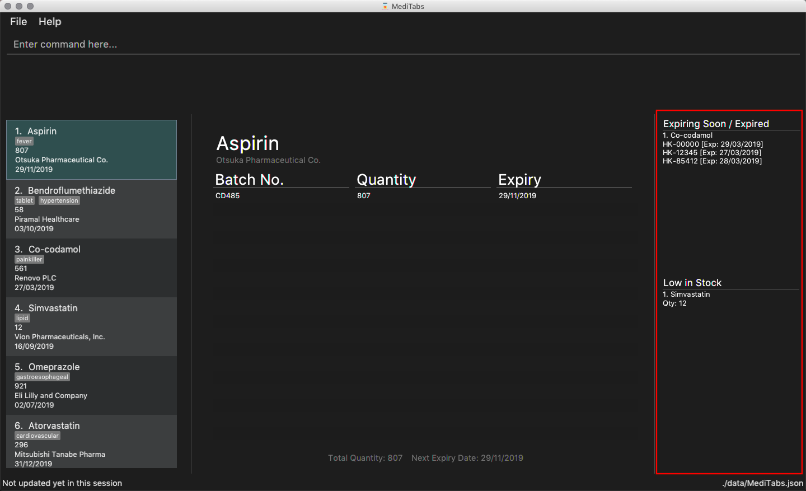
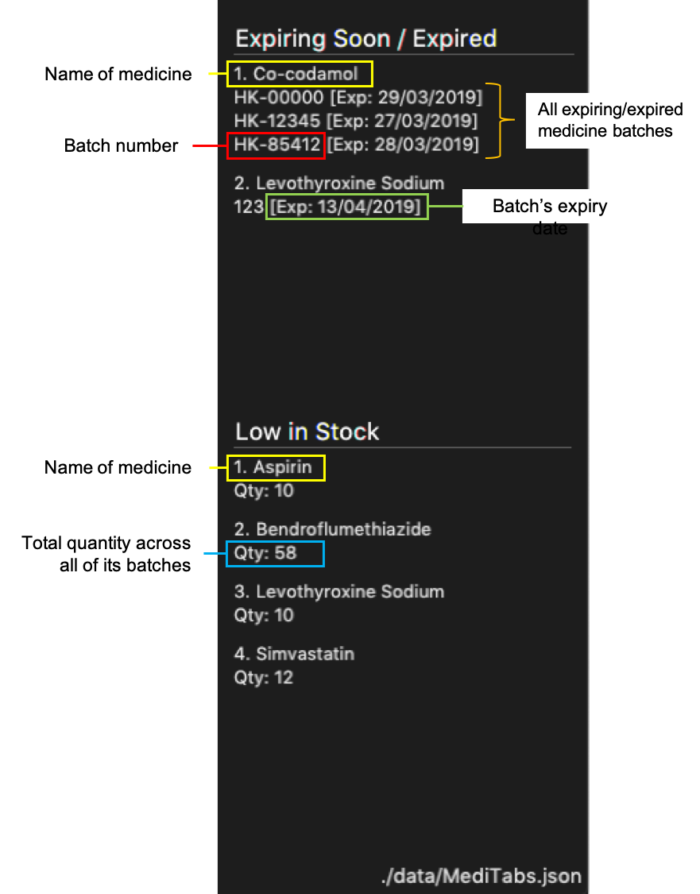

Introduction
This project portfolio will give you an overview of the documentation, code and ideas I contributed to my team’s project, MediTabs, as the team’s front-end designer. This project was completed as part of an introductory software engineering module in the National University of Singapore (NUS).
Project Overview
MediTabs is a desktop application built with the goal to streamline inventory management in a clinic for pharmacists. As part of the project’s requirements, MediTabs targets users with a preference for command line interactions.
To achieve this goal, we implemented several key features: a warning panel to view urgent issues, an information panel to display medicine information, and data exportation for data analysis.
For this project, I was in-charge of implementing the warning panel and its related commands.
Summary of contributions
This section highlights noteworthy contributions I made to the project’s documentation and source code.
-
Major enhancement: Added a warning panel and related
warningcommandsFigure 1. MediTabs main interface with the warning panel boxed in red-
What it does: The warning panel gives users an overview of what medicine batches are expiring/expired and what medicines are low in stock. Thresholds used to determine what is expiring and what is low in stock can be set by the user with simple commands.
-
Justification: Simplifies the process of sieving through an inventory to find expiring/expired medicine batches that need to be disposed of, and medicines that require replenishing. User-defined thresholds add to the user experience.
-
Highlights: This enhancement required an understanding of all major components to render and populate a column in the application’s main interface with the correct lists of items, and to implement complementing commands to change its contents.
-
-
Minor enhancement: Changed the implementation of Expiry class so that it uses an updated library, (
java.time.LocalDate), instead of the deprecated (java.util.Date). -
Code contributed: [Project Code Dashboard]
-
Other contributions:
-
Source code
-
Documentation
-
Restructured existing contents of the User Guide: #151
-
-
Community
-
Contributions to the User Guide
The following sections are my contributions to the User Guide. They showcase my ability to write documentation targeting end-users.
Warning Panel
-
The warning panel displays a list of medicines running low on stock and a list of expiring/expired medicine batches.
-
Warnings will be logged in the warnings panel until changes are made to medicines and/or batches displayed, or to the thresholds controlling what is displayed.
-
Image below shows the labelled components of the warning panel:
Figure 2. Labelled warning panel
Managing the warning panel : warning
Manage the threshold for expiry date and low stock warnings to alter the contents of the warning panel.
Format: warning [e/EXPIRY_THRESHOLD] [q/LOW_STOCK_THRESHOLD] [SHOW]
Provide only one of the optional fields available.
If the thresholds are not set, the default threshold for expiry will be 10 days, and 20 for low stock.
Thresholds set by the user are saved and will be used when the application is launched again.
|
All thresholds must be positive integers. |
Examples:
-
warning e/30
Medicine batches that have expired or with expiry dates within 30 days to expiry from today will be displayed in the warning panel. -
warning q/10
Medicines with a total quantity of less than or equal to 10 will be displayed in the warning panel. -
warning show
Current thresholds used for the warning panel will be shown in the result display.
Contributions to the Developer Guide
The following sections are my contributions to the Developer Guide. They showcase my ability to write technical documentation and the technical depth of my contributions to the project.
Warning Panel
Current Implementation
The WarningPanel is created as part of the MainWindow, to be displayed in the GUI. Within the panel are two lists, expiring/expired and low in stock, represented by WarningListView objects. The purpose of this feature is to allow the user to view expiring/expired medicine batches and low quantity medicines easily.
The following are some of the operations implemented:
-
Logic#getWarningPanelPredicateAccessor()— Returns aWarningPanelPredicateAccessor. This gives the caller access to all predicates used to filter lists for the warning panel in the current session. -
WarningPanel#setUpVBox(ObservableList<Medicine>, ObservableList<Medicine>)— Sets up theVBox(vertical box) representing the warning panel by creatingWarningListViewobjects from theObservableListobjects. EachWarningListViewis a list to be displayed in the GUI.
Initialising the warning panel
Given below is how the warning panel GUI is initialised on start up.
Step 1. User launches MediTabs, invoking MainWindow#fillInnerPart. The MainWindow class calls Logic#getExpiringMedicinesList, Logic#getLowStockMedicinesList and Logic#getWarningPanelPredicateAccessor to obtain the two ObservableList<Medicine> to be displayed in the warning panel and the predicate accessor used in this session.
Step 2. The WarningPanel is initialised with the objects obtained in Step 1, and constructs a VBox.
Step 3. The WarningPanel self-invokes setUpVBox to populate the VBox with WarningListView objects for display. There will be two WarningListView objects, each initialised with its corresponding ObservableList<Medicine>, a list descriptor and the predicate accessor.
Step 4. The WarningListView configures a ListView<Medicine> object to display elements in the ObservableList<Medicine>. Every ListView<Medicine> cell is populated by a WarningListViewCell object.
Step 5. The WarningListViewCell listens to updates to the ObservableList<Medicine> that would update the medicines/batches to be displayed in the respective list in the warning panel.
The sequence diagram below summarises the above mentioned mechanism.

Input handling
The basic flow of the warning command in two scenarios are as such:
To change a threshold used by the warning panel
Step 1. The user enters the command warning e/10 to change the threshold for expiring medicine batches.
Step 2. The command is parsed and a WarningCommand object is created with the type and value of the new threshold to be set.
Step 3. The WarningCommand#execute method is invoked.
Step 4. Threshold for expiring medicine batches is changed.
Step 5. The expiring/expired batch list in the warning panel is updated accordingly.
Step 6. The new set of thresholds is shown in the result display box.
To display thresholds currently in use
Step 1. The user enters the command warning show.
Step 2. The command is parsed and a WarningCommand object is created to show current threshold levels.
Step 3. The WarningCommand#execute method is invoked.
Step 4. The current thresholds used are shown in the result display box.
The activity diagram below summarises what happens when the warning command is executed:
warning commandDesign Considerations
Aspect: Construction of the lists displayed by the warning panel
Two ObservableLists<Medicine> objects are required, one to display medicine batches expiring soon and the other to display medicines low in stock.
-
Alternative 1 (current choice): Create the
ObservableList<Medicine>objects in theModelManagerby filtering the main medicine list, and haveMainWindowobtain them viaLogic.-
Pros: Easy to change predicates for filtration, making it possible to set user defined thresholds, thereby improving user experience.
-
Cons: Requires passing the two lists around, from
ModelManagertoLogicthenMainWindow.
-
-
Alternative 2: Create the
ObservableList<Medicine>objects inUi.-
Pros: Simple to implement. Filter the main medicine list with the default predicates (i.e. thresholds for expiration and low stock) within
WarningPanel. -
Cons: No separation of concerns. Not possible to set user defined thresholds for either list.
-
Aspect: Implementation of predicates used for the warning panel
-
Alternative 1 (current choice): Singleton warning panel predicate accessor.
-
Pros: Easy to access and update all warning panel-related predicates.
-
Cons: Must pass the instance of the predicate accessor around to ensure there is only one instance of it at any time.
-
-
Alternative 2: Save all predicates in the
ModelManager.-
Pros: Easy to implement.
-
Cons: Predicate manipulation from
Logicwhen new thresholds are set violates Dependency Inversion Principle.
-
Changing warning panel thresholds
-
Changing the threshold for expiring medicine batches
-
Prerequisites: Current expiry threshold is 10 days (default). Multiple medicines with batches in the list.
-
Test case:
warning e/0
Expected: All medicines batches that have expired or are expiring today are shown in the warning panel’s "Expiring Soon/Expired" list. New thresholds are shown in status message. -
Test case:
warning e/-1
Expected: No changes to warning panel. Error details shown in the status message. -
Other incorrect warning commands to try:
warning,warning e/x(where x is not a positive integer),warning {non-whitespace preamble} e/y(where y is a positive integer)
Expected: Similar to previous.
-
-
Changing the threshold for medicines with low stock
-
Prerequisites: Current low stock threshold is 20 (default). Multiple medicines with non-zero total quantities in the list.
-
Test case:
warning q/0
Expected: Warning panel’s "Low in Stock" list empties and placeholder "Nothing to show" is displayed. New thresholds are shown in status message. -
Test case:
warning q/-1
Expected: No changes to warning panel. Error details shown in the status message. -
Other incorrect warning commands to try:
warning,warning q/x(where x is not a positive integer),warning {non-whitespace preamble} q/y(where y is a positive integer)
Expected: Similar to previous.
-
[Proposed] Data Encryption
Data encryption is likely to be implemented in future versions of the MediTabs if a reasonable implementation is found.
Design Considerations
Aspect: How data encryption is executed
-
Alternative 1: Encrypt the entire inventory.
-
Pros: Easy to implement. Use existing encryption libraries to encrypt the entire inventory.
-
Cons: May have performance issues when encrypting/decrypting large amounts of data.
-
-
Alternative 2: Only encrypt parts of the inventory user selects.
-
Pros: More efficient in terms of performance (cuts down on encryption/decryption time).
-
Cons: Add
encryptanddecryptcommand to allow user to choose what needs to be encrypted and decrypted respectively. Need to encrypt/decrypt different chunks of data correctly.
-
Aspect: Data structure to support data encryption
-
Alternative 1: Save the entire inventory as encrypted data in the database.
-
Pros: Data is secure and not viewable without encryption key.
-
Cons: Implement log in page for decryption of inventory. Require alternative if encryption key is forgotten.
-
-
Alternative 2: Save encrypted parts of inventory and plaintext in database.
-
Pros: Able to salvage some information if encryption key is lost.
-
Cons: Need to implement packing/unpacking of encrypted data and plaintext during startup/shutdown.
-